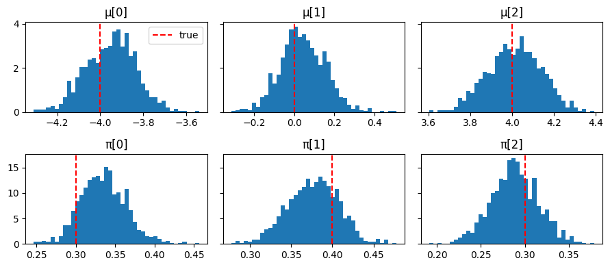
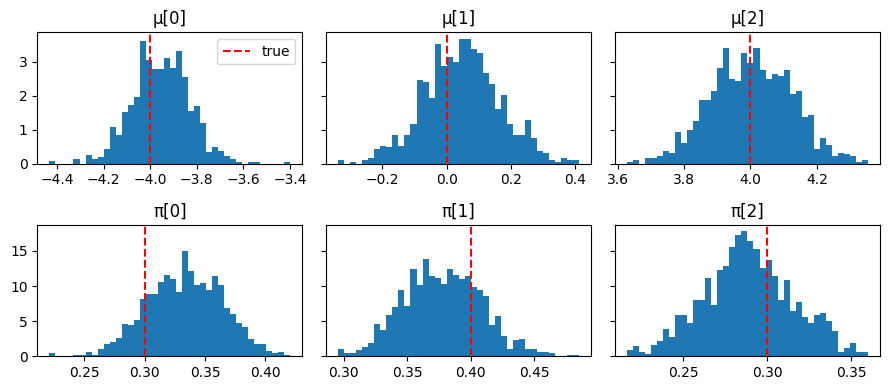

Use with Funsor#
Funsor is a library of functional
tensors for probabilistic programming. It generalises the tensor interface by
treating arrays as functions over named variables rather than positionally
indexed grids. The central consequence for MCMC: Funsor can exactly
marginalise discrete latent variables via variable elimination, turning
a sum over K discrete states into a fused JAX operation that is fully
compatible with jax.jit and jax.grad.
This makes Funsor the natural complement to BlackJax for models that mix discrete and continuous latent variables — Gaussian Mixture Models, Hidden Markov Models, mixed-membership models — where gradient-based samplers such as NUTS would otherwise be inapplicable because discrete variables block automatic differentiation.
In this notebook we fit a Gaussian Mixture Model with K=3 components.
The discrete component assignments z_i are marginalised analytically by
Funsor; BlackJax NUTS then samples the continuous parameters μ and π.
Setup and data#
import jax
import jax.numpy as jnp
import numpy as np
import blackjax
import funsor
import funsor.ops as ops
funsor.set_backend("jax") # must be called before Tensor/Variable are used
from funsor.domains import Bint
from funsor.tensor import Tensor
from funsor.terms import Variable
from funsor.jax.distributions import Categorical, Normal
from datetime import date
rng_key = jax.random.key(int(date.today().strftime("%Y%m%d")))
We generate synthetic data from a three-component Gaussian mixture so we can verify that the sampler recovers the true parameters.
print(f"N={N} observations, K={K} components")
print(f"True means : {true_mu}")
print(f"True weights: {true_pi}")
N=300 observations, K=3 components
True means : [-4. 0. 4.]
True weights: [0.3 0.4 0.3]
The model and log-density#
The generative model is:
π ~ Dirichlet(1, 1, 1) # mixing weights (continuous)
μ_k ~ Normal(0, 5) # component means (continuous)
z_i ~ Categorical(π) # assignment (discrete — marginalised)
x_i | z_i ~ Normal(μ[z_i], 1) # likelihood
Because z_i is discrete, direct gradient-based inference is impossible.
Funsor solves this by treating the sum over assignments as a symbolic
computation graph that JAX can differentiate through. Three Funsor primitives
do all the work:
Tensor(arr, {"name": Bint[size]})— wraps a JAX array so its axis is addressable by name rather than by integer position.Variable("z", Bint[K])— a free (unevaluated) discrete variable ranging over{0, …, K-1}.f(k=z)— substitution: renames the"k"axis to"z", transferring the name so that expressions over different named axes broadcast correctly.Normal(loc=..., scale=..., value=x)/Categorical(probs=..., value=z)— distribution objects fromfunsor.jax.distributionsthat accept a Funsor asvalueand return the log-probability as a Funsor over that variable’s named dimensions. Distinct named dimensions inlocandvaluebroadcast as an outer product automatically.
The mixing weights π live on the K-simplex. Rather than sampling all K
components of log_pi (which leaves a constant-shift null direction that
confuses the mass matrix), we fix the first logit to zero and sample only
K−1 free parameters. The map ℝ^{K-1} → Δ^{K-1} is bijective, so no
Jacobian correction is needed.
def gmm_logdensity(position):
mu = position["mu"] # (K,) component means
log_pi = position["log_pi"] # (K-1,) unconstrained free logits
# Prepend a fixed zero so softmax maps K-1 reals bijectively onto Δ^{K-1}.
pi = jax.nn.softmax(jnp.concatenate([jnp.zeros(1), log_pi])) # (K,)
# ── Named Funsor tensors ─────────────────────────────────────────────────
# Tensor(arr, inputs): arr is indexed by the dimensions named in inputs.
# pi_f has no named dim: Categorical indexes it internally via value=z.
mu_f = Tensor(mu, {"k": Bint[K]}) # mu_f[k] for k ∈ {0, …, K-1}
pi_f = Tensor(pi, {}) # (K,) simplex, no named dim
x_f = Tensor(data, {"n": Bint[N]}) # x_f[n] for n ∈ {0, …, N-1}
# ── Discrete variable: component assignment ──────────────────────────────
z = Variable("z", Bint[K])
# ── log p(z | π) — Categorical, Funsor over {"z"} ───────────────────────
log_cat_prior = Categorical(probs=pi_f, value=z) # inputs: {"z": Bint[K]}
# ── log p(x_n | z) — Normal likelihood, Funsor over {"z", "n"} ──────────
# mu_f(k=z) substitutes k→z: Funsor over {"z": Bint[K]}.
# Normal's loc depends on "z" and value depends on "n", so the result
# spans both dimensions automatically as an outer product.
mu_z = mu_f(k=z)
log_lik = Normal(loc=mu_z, scale=1.0, value=x_f) # inputs: {"z": Bint[K], "n": Bint[N]}
# ── Exact marginalisation of z ───────────────────────────────────────────
# reduce(logaddexp, "z") computes log Σ_z exp(log_joint) for every n.
# Funsor evaluates all K states and combines with logsumexp inside JAX —
# the result is fully differentiable w.r.t. mu and pi.
log_joint = log_cat_prior + log_lik # inputs: {"z": Bint[K], "n": Bint[N]}
log_marginal_n = log_joint.reduce(ops.logaddexp, "z") # inputs: {"n": Bint[N]}
# ── μ prior: μ_k ~ Normal(0, 5), summed over K components ───────────────
log_mu_prior = Normal(loc=0., scale=5., value=mu_f).reduce(ops.add, "k")
# ── Total log-density ────────────────────────────────────────────────────
log_p = log_marginal_n.reduce(ops.add, "n") # scalar Funsor, inputs: {}
return log_p.data + log_mu_prior.data
Let us verify that the log-density is finite at a sensible initialisation and
that jax.grad can differentiate through the Funsor marginalisation:
position0 = {
"mu": jnp.array([-3., 0., 3.]),
"log_pi": jnp.zeros(K - 1), # K-1 free logits; first logit fixed at 0
}
print("log p(data | init):", gmm_logdensity(position0))
print("grad w.r.t. mu :", jax.grad(gmm_logdensity)(position0)["mu"])
log p(data | init): -813.15216
grad w.r.t. mu : [-80.09981 4.946947 69.5648 ]
Window adaptation#
BlackJax’s window adaptation tunes the NUTS step size and mass matrix during a warmup phase. Here we run 1000 warmup steps, after which the kernel is ready for sampling.
%%time
rng_key, warmup_key = jax.random.split(rng_key)
adapt = blackjax.window_adaptation(blackjax.nuts, gmm_logdensity)
(last_state, parameters), _ = adapt.run(warmup_key, position0, num_steps=1000)
kernel = blackjax.nuts(gmm_logdensity, **parameters).step
CPU times: user 3.9 s, sys: 248 ms, total: 4.15 s
Wall time: 1.79 s
Inference loop#
%%time
rng_key, sample_key = jax.random.split(rng_key)
states, infos = inference_loop(sample_key, kernel, last_state, num_samples=1000)
CPU times: user 2.63 s, sys: 45.5 ms, total: 2.68 s
Wall time: 1.08 s
Results#
Note
GMMs are invariant to permutation of component labels. NUTS converges to one of the K! symmetric modes; the component indices carry no absolute meaning across runs with different random seeds.
import matplotlib.pyplot as plt
mu_samples = states.position["mu"]
# Reconstruct full K-simplex from K-1 free logits.
pi_samples = jax.vmap(
lambda lp: jax.nn.softmax(jnp.concatenate([jnp.zeros(1), lp]))
)(states.position["log_pi"])
# Resolve label switching: sort components by ascending mean value so the
# plotting order matches true_mu = [-4, 0, 4].
sort_idx = jnp.argsort(mu_samples, axis=1)
mu_samples = jnp.take_along_axis(mu_samples, sort_idx, axis=1)
pi_samples = jnp.take_along_axis(pi_samples, sort_idx, axis=1)
fig, axes = plt.subplots(2, K, figsize=(9, 4), sharey="row")
for k in range(K):
axes[0, k].hist(np.array(mu_samples[:, k]), bins=40, density=True)
axes[0, k].axvline(true_mu[k], color="red", linestyle="--", label="true")
axes[0, k].set_title(f"μ[{k}]")
axes[1, k].hist(np.array(pi_samples[:, k]), bins=40, density=True)
axes[1, k].axvline(true_pi[k], color="red", linestyle="--", label="true")
axes[1, k].set_title(f"π[{k}]")
axes[0, 0].legend()
plt.tight_layout();

Posterior E[μ]: [-3.9499998 0.04 4.0099998] true: [-4. 0. 4.]
Posterior E[π]: [0.32999998 0.38 0.29 ] true: [0.3 0.4 0.3]
Mean acceptance rate: 0.89
Alternative: NumPyro model syntax#
The pure Funsor approach above requires writing the factor graph explicitly. If
you already use NumPyro, you can write the model in the familiar numpyro.sample
/ numpyro.plate style and let Funsor handle the discrete marginalisation
transparently via the @config_enumerate decorator.
Under the hood, initialize_model detects the decorated discrete sites and
wires in Funsor’s variable elimination automatically. The continuous parameters
are reparameterised (e.g. π via a stick-breaking transform onto the simplex),
and the returned potential_fn is fully JAX-differentiable — no changes to the
BlackJax call site are required.
import numpyro
import numpyro.distributions as dist
from numpyro.contrib.funsor import config_enumerate
from numpyro.infer.util import initialize_model
The model is written identically to a standard NumPyro model. The only
addition is @config_enumerate, which marks the discrete site z for
enumeration. Priors and the likelihood are expressed with NumPyro distributions;
no manual log-prob arithmetic is needed.
@config_enumerate
def gmm_model_npy(data, K):
# Continuous parameters — sampled by BlackJax NUTS
pi = numpyro.sample("pi", dist.Dirichlet(jnp.ones(K)))
with numpyro.plate("components", K):
mu = numpyro.sample("mu", dist.Normal(0.0, 5.0))
# Discrete assignment — Funsor marginalises this out
with numpyro.plate("obs", len(data)):
z = numpyro.sample("z", dist.Categorical(pi))
numpyro.sample("x", dist.Normal(mu[z], 1.0), obs=data)
initialize_model returns an initial position containing only the continuous
variables (in unconstrained space) and a potential_fn_gen that already wraps
the Funsor enumeration — the same pattern used in the plain NumPyro tutorial.
rng_key, init_key_npy = jax.random.split(rng_key)
init_params_npy, potential_fn_gen_npy, *_ = initialize_model(
init_key_npy,
gmm_model_npy,
model_args=(data, K),
dynamic_args=True,
)
initial_position_npy = init_params_npy.z
print("Sites and shapes:", {k: v.shape for k, v in initial_position_npy.items()})
Sites and shapes: {'pi': (2,), 'mu': (3,)}
Note
pi has shape (K-1,) here because NumPyro automatically applies a
stick-breaking transform, mapping the (K-1)-dimensional unconstrained space
bijectively onto the K-simplex.
logdensity_fn_npy = lambda position: -potential_fn_gen_npy(data, K)(position)
print("log p(data | init):", logdensity_fn_npy(initial_position_npy))
print("grad w.r.t. mu :", jax.grad(logdensity_fn_npy)(initial_position_npy)["mu"])
log p(data | init): -1304.0923
grad w.r.t. mu : [-179.66136 30.539577 181.4494 ]
Window adaptation and the inference loop are identical to before.
%%time
rng_key, warmup_key_npy = jax.random.split(rng_key)
adapt_npy = blackjax.window_adaptation(blackjax.nuts, logdensity_fn_npy)
(last_state_npy, params_npy), _ = adapt_npy.run(
warmup_key_npy, initial_position_npy, num_steps=1000
)
kernel_npy = blackjax.nuts(logdensity_fn_npy, **params_npy).step
CPU times: user 3.32 s, sys: 100 ms, total: 3.42 s
Wall time: 1.47 s
%%time
rng_key, sample_key_npy = jax.random.split(rng_key)
states_npy, infos_npy = inference_loop(
sample_key_npy, kernel_npy, last_state_npy, num_samples=1000
)
CPU times: user 2.92 s, sys: 41.7 ms, total: 2.96 s
Wall time: 1.19 s
To recover π on the simplex, apply the stick-breaking transform to the
unconstrained samples.
from numpyro.distributions.transforms import StickBreakingTransform
mu_samples_npy = states_npy.position["mu"]
pi_samples_npy = jax.vmap(StickBreakingTransform())(states_npy.position["pi"])
sort_idx_npy = jnp.argsort(mu_samples_npy, axis=1)
mu_samples_npy = jnp.take_along_axis(mu_samples_npy, sort_idx_npy, axis=1)
pi_samples_npy = jnp.take_along_axis(pi_samples_npy, sort_idx_npy, axis=1)
fig, axes = plt.subplots(2, K, figsize=(9, 4), sharey="row")
for k in range(K):
axes[0, k].hist(np.array(mu_samples_npy[:, k]), bins=40, density=True)
axes[0, k].axvline(true_mu[k], color="red", linestyle="--", label="true")
axes[0, k].set_title(f"μ[{k}]")
axes[1, k].hist(np.array(pi_samples_npy[:, k]), bins=40, density=True)
axes[1, k].axvline(true_pi[k], color="red", linestyle="--", label="true")
axes[1, k].set_title(f"π[{k}]")
axes[0, 0].legend()
plt.tight_layout();

Posterior E[μ]: [-3.9499998 0.05 4. ] true: [-4. 0. 4.]
Posterior E[π]: [0.32999998 0.38 0.29 ] true: [0.3 0.4 0.3]
Mean acceptance rate: 0.91
Which approach to use#
Pure Funsor |
NumPyro + Funsor |
|
|---|---|---|
Model syntax |
Explicit named-tensor algebra |
|
Priors and transforms |
Manual |
Automatic |
Discrete marginalisation |
|
|
Requires NumPyro |
No |
Yes |
Best for |
Understanding Funsor internals |
Production models, complex plate structure |